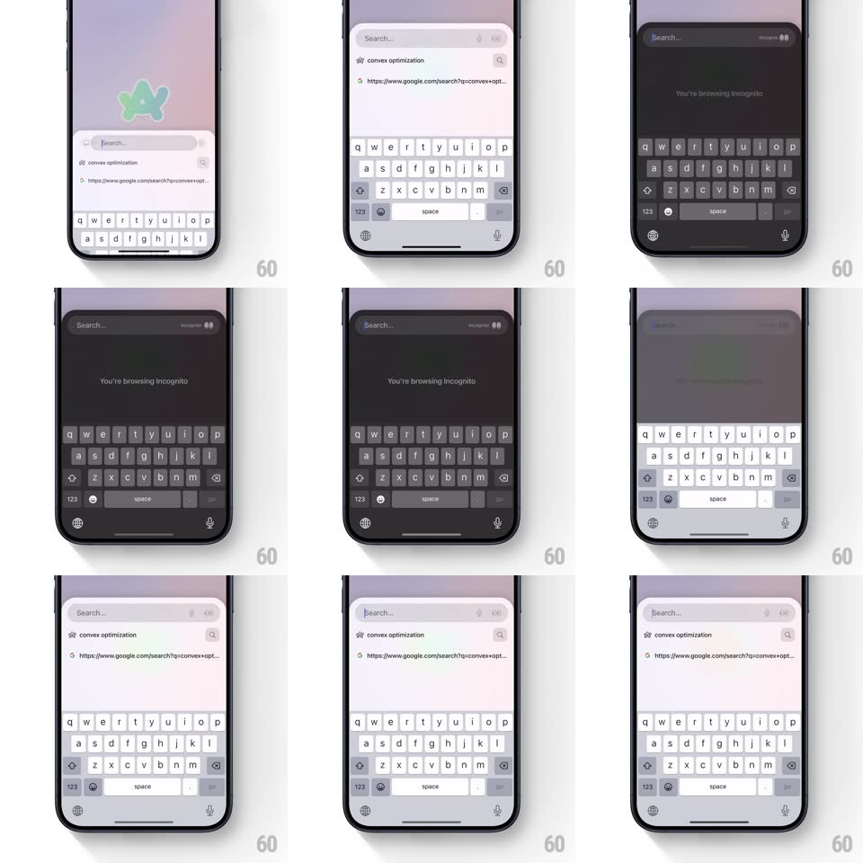

Media
Frame-by-frame

Rebuild this interaction 1:1: Arc Search's incognito toggle - flipping into incognito crossfades the entire light search UI into a dark theme, the search bar, suggestion rows, and keyboard all re-skinning together, with "You're browsing incognito" settling in the empty state.

Rebuild this interaction 1:1: Arc Search's incognito toggle - flipping into incognito crossfades the entire light search UI into a dark theme, the search bar, suggestion rows, and keyboard all re-skinning together, with "You're browsing incognito" settling in the empty state.
## Integration
Integration: stack-agnostic spec - springs given as stiffness/damping, timed motions as duration + curve; map every value to your framework and animation library of choice.
## Scene
Search interface: a "Search..." bar with suggestions below ("convex optimization", a URL row), system keyboard up. Incognito state: the same layout fully dark - near-black background, dark gray bar and keycaps, centered "You're browsing incognito" message.
## Motion spec
Pattern: full-UI theme crossfade with settling message.
- Toggle: the whole screen crossfades light-to-dark over 400ms (ease-in-out) - background, bar, suggestion rows, and keyboard keys all interpolate colors simultaneously, nothing lagging behind.
- The search bar's icons swap with a tiny spin (incognito glyph rotates in, 250ms, spring ~380/20).
- "You're browsing incognito" fades in at center and rises 10px into place (350ms, 150ms after the theme flip starts).
- The keyboard re-skins keycap-by-keycap in a wave sweeping from the top row down (30ms per row) - the one element with internal stagger.
- Toggling back reverses it exactly, the message fading first (150ms) so the theme doesn't return to a stale screen.
## Calibration
- Dark theme values: background near #1C1C1E, surfaces #2C2C2E - standard dark grays, not pure black.
- Text fields keep their content and cursor position through the flip - the theme is cosmetic, state survives.
## Reduced motion
Instant theme swap; message fades.
## Don't miss
- The keyboard participates - a light keyboard under a dark UI would break the whole illusion.
- The crossfade is uniform in time but the keyboard's row wave gives it texture - global change, local rhythm.